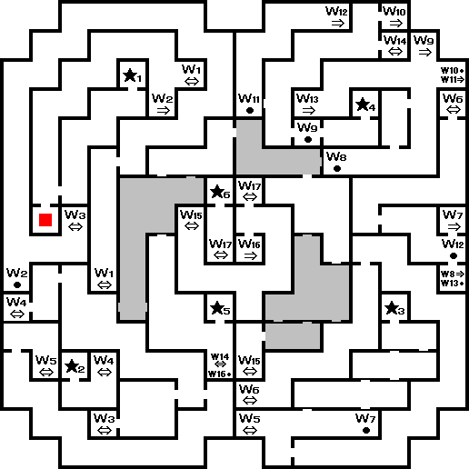
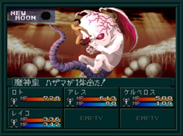

진 여신전생 if...
정신 세계
공략

★1 : 기억(1인)
★2 : 기억(학생)
★3 : 기억(양호 선생)
★4 : 기억(아키코)
★5 : 기억(레이코)
★6 : 마신황 하자마
진행 순서 : W2→W3→W5→W6→W8→W9→W14→W15→W17
맵의 끝에서
BOSS:마신황 하자마
과 마지막 전투
BOSS:마신황 하자마

레이코 루트의 최종 보스
이름
Lv90 魔神皇ハザマ
HP
30000
마법/특기
メギド／ハマオン／マカラカーン／マリンカリン／雷霆蹴り／ソルクラスター／ソウルスマッシュ／ランダマイザ／デカジャ
유효
검, 검(악마), 공격(악마), 화염, 충격, 만능
무효
총
반사
기술(악마), 돌격(악마), 빙결, 속박, 신경, 마력, 파마, 주살
흡수
전격
기본 전술은 같지만, 아군의 버프를 지우는 데카쟈(デカジャ)를 사용해온다. 이것을 막는 방법은 하자마보다 빠르게 마카라칸(マカラカーン)을 시전해서 반사하는 방법 밖에 없다. 레이코의 가디언으로 마카라칸을 습득한 후 속도를 20 이상으로 맞춰 놓으면 하자마의 데카쟈를 반사할 수 있게 된다.
솔 클러스터(ソルクラスタ−)는 마력이 낮은 1인을
주살
시키는 공격이다. 파이널 가드(ファイナルガ−ド) 같은 아이템으로 방어해야 된다.